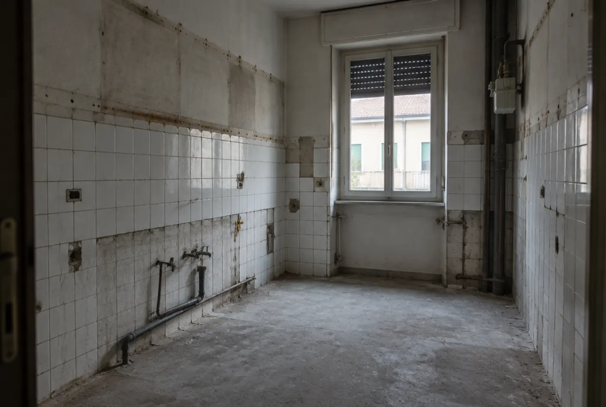
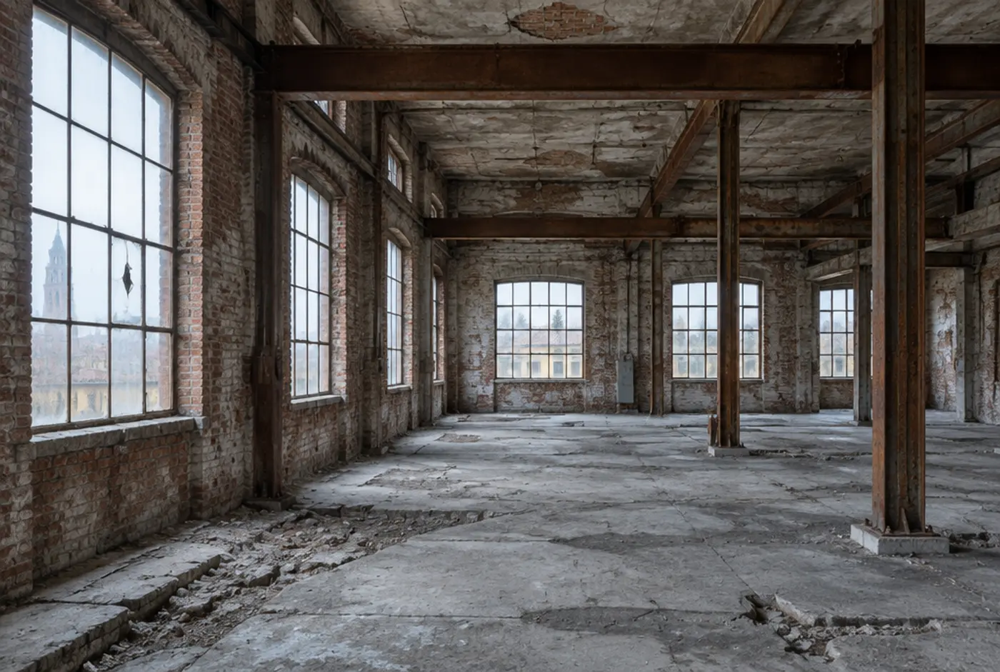
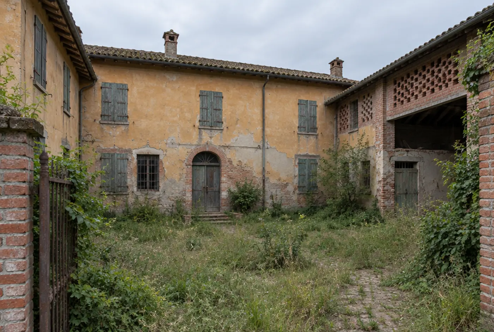

Stessa inquadratura, stesse finestre, cinque mesi di distanza. In mezzo: demolizioni, tracce per i nuovi impianti, massetto, intonaci, parquet in rovere e la cucina.
Superficie128 m²
Cantiere5 mesi
Budget indicativoda 95.000 €
PrimaDopo
Metodo · 4 fasi
Un cantiere che sai sempre dove si trova.
Ogni fase chiude con un documento e una data. Nessuna telefonata per capire a che punto siamo: lo vedi nell'area cliente.
01
Sopralluogo
Rilievo, foto, ascolto delle priorità e del budget. Gratuito.
Settimana 1
02
Progetto e preventivo
Pianta, capitolato dei materiali, costi voce per voce e cronoprogramma.
Settimane 2–4
03
Cantiere
CILA o SCIA, squadre coordinate, stato di avanzamento con foto ogni settimana.
Da 6 settimane
04
Chiavi
Collaudo, certificazioni impianti, pulizia finale e garanzie.
Giorno di consegna
Progetti · 3 di 7
Il prima lo fotografiamo. Il dopo lo consegniamo.
Ogni cantiere è documentato dal primo giorno. Scorri: il grezzo lascia il posto al finito. Progetti fittizi, costruiti per la demo.

Grezzo → finito
01 · Cucina
Cucina Saragozza
Una cucina anni '80 stretta e buia: impianti rifatti, ante verde salvia, piastrelle bianche e piano in quarzo chiaro. Finestra e termosifone restano dove sono.
Superficie14 m²
Cantiere6 settimane
Budgetda 28.000 €

Grezzo → finito
02 · Recupero
Officina 14
Un laboratorio dismesso a Parma diventa una casa su due livelli: mattoni puliti, soppalco in acciaio e il pavimento originale in cemento, lucidato e lasciato con le sue crepe.
Superficie190 m²
Cantiere7 mesi
Budgetda 210.000 €

Grezzo → finito
03 · Casa a corte
Corte 03
Il recupero di una colonica nella pianura modenese: intonaco a calce, persiane nuove in legno, tetto rifatto recuperando i coppi ancora buoni.


 Grezzo → finito
Grezzo → finito